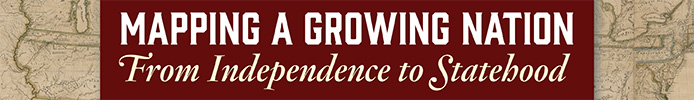

Exhibitions Image

Ongoing exhibition, open September 1, 2016
Abel Buell’s New and Correct Map of the United States of North America is the first map of the newly independent United States compiled, printed, and published in America by an American. This important early American map is known to exist in only seven copies. Philanthropist David M. Rubenstein has generously placed his copy of the map at the Library.
Mapping a Growing Nation: From Independence to Statehood comprises maps of the northeastern and southeastern regions of the United States. Over time, maps of all fifty states will be included in this online exhibition.